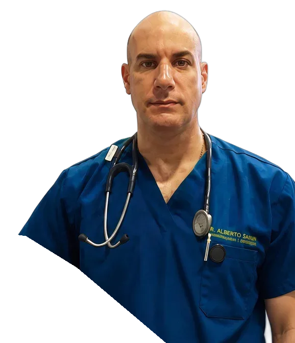
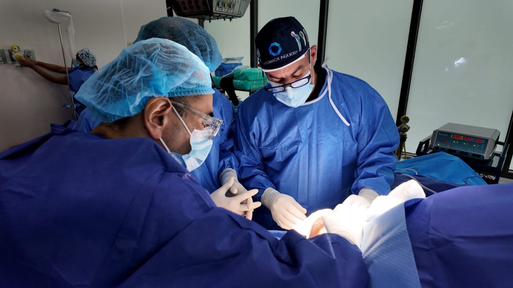

¿Dónde está tu lesión?
Elige la zona y lee cómo la tratamos. Cada página explica síntomas, estudios y opciones de tratamiento.
-
Rodilla
Artroscopía para ligamento cruzado anterior, meniscos, sinovitis y plica sinovial.
- Hombro
Fracturas, luxaciones y lesiones musculares y ligamentarias.
- Cadera
Dolor de cadera, artrosis, reemplazo total y fractura de cadera.
- Fracturas
Tratamiento con yeso o férula y cirugía de osteosíntesis.
- Lesiones deportivas
Esguinces, tendinitis, desgarros musculares y lesiones por sobrecarga.
- Espalda
Dolor cervical, dorsal y lumbosacro, con tratamiento según su causa.
- Artrosis
Rodilla, cadera y otras articulaciones, con tratamiento sin cirugía o con prótesis.
- Osteoporosis
Densitometría ósea y prevención de fracturas y caídas.
¿No encuentras tu lesión? Escríbenos y te decimos qué consulta necesitas.
Escribir por WhatsAppAsí se ve una artroscopía de rodilla
Entro a la rodilla con una cámara por dos o tres incisiones pequeñas. Desde la pantalla reparo meniscos y ligamentos sin abrir la articulación.
Por lo general vuelves a casa el mismo día o al siguiente. El tiempo de recuperación depende de la lesión y del procedimiento.
Leer sobre la artroscopía de rodillaCómo es la atención
Del primer mensaje al alta, con el mismo médico en cada paso.
Escríbenos por WhatsApp
Te damos la cita en el consultorio 12 de UEESCLINIC, de lunes a viernes de 7:00 a 18:00.
Consulta y examen
Revisamos tus estudios y te examino. Si hace falta, pedimos radiografía, ecografía o resonancia magnética.
Diagnóstico y plan
Te explico qué tienes y qué opciones hay. Muchas lesiones mejoran sin cirugía.
Tratamiento
Fisioterapia, medicación, yeso o cirugía en el quirófano de UEESCLINIC, según tu caso.
Controles
Seguimos tu recuperación en consulta hasta que vuelvas a tus actividades.
Si tienes seguro, trae los datos de tu póliza: te llenamos los formularios para tu reembolso.

Alberto Sadun Rodríguez
Médico Cirujano Ortopedista
Me formé en Traumatología y Ortopedia en el Hadassah Hebrew University Hospital de Jerusalén, Israel. Soy médico graduado en la Universidad Católica de Santiago de Guayaquil.
Antes de especializarme hice el internado en el Jackson Memorial Hospital con el Programa William J. Harrington para Latinoamérica. Después dirigí la investigación de la División de Cirugía de Artritis del Dr. Carlos Lavernia, en la Universidad de Miami, donde preparé artículos y trabajos para revistas médicas y congresos.
Opero en Guayaquil y Samborondón desde 2006, y desde agosto de 2021 soy Jefe de Traumatología de UEESCLINIC. Mi práctica se centra en la cirugía artroscópica de rodilla: ligamento cruzado anterior, meniscos y cartílago. También trato fracturas, luxaciones y lesiones del hombro, otras fracturas y lesiones deportivas.
Sigo enseñando como Facultativo Adjunto del Programa Harrington de la Universidad de Miami.
Trayectoria
- 2021 a la actualidadJefe de TraumatologíaUEESCLINIC Hospital Docente, Samborondón.
- 2007 a la actualidadFacultativo Adjunto, Universidad de MiamiPrograma William J. Harrington para Latinoamérica.
- 2006 a 2021Cirujano ortopedistaHospital Clínica Kennedy Alborada, Guayaquil. Entre 2011 y 2014 también en Medikal.
- 2002 a 2006Residencia en Cirugía OrtopédicaHadassah Hebrew University Hospital, Jerusalén, Israel.
- 2001 a 2002Medicina ruralDispensario CE.FA.S., Samborondón.
- 1999 a 2001Investigación en reemplazo articularDivisión de Cirugía de Artritis, Universidad de Miami. Director de investigación desde marzo de 2000.
- 1999Doctor en Medicina y CirugíaUniversidad Católica de Santiago de Guayaquil.
- 1998 a 1999Programa HarringtonJackson Memorial Hospital, Universidad de Miami.
Cursos y congresos
La formación continúa: talleres de artroscopía con cadáver, cursos de reemplazo articular y congresos internacionales.
Cadáver Lab de Rodilla Latinoamérica, Smith+Nephew
Boston Smith+Nephew Academy, Andover, Massachusetts, Estados Unidos.
Smith+Nephew Arthroscopic Knee Surgery Course
Andover, Massachusetts, Estados Unidos.
Cadáver Lab de Rodilla en Medicina Deportiva, Smith+Nephew Latinoamérica
Smith+Nephew, Andover, Massachusetts, Estados Unidos.
Arthrex Advanced Arthroscopy Knee Course
Naples, Florida, Estados Unidos.
Cursos anteriores
Uso de injertos osteomusculares en cirugía ortopédica y traumatológica
INDOT y Sociedad Ecuatoriana de Ortopedia y Traumatología, Ecuador.
Knee and Shoulder Intermediate Arthroscopy Workshop
Clínica Las Condes, Santiago de Chile.
Naton Academy Instructional Course
Chinese People's Liberation Army General Hospital, Beijing, China.
Fast Fix 360, Meniscal Sutures Workshop
Smith+Nephew Medical Education, Guayaquil.
PARCUS Product and Advanced Surgical Skills Technique Training for Shoulder and Knee Arthroscopy
Miami, Estados Unidos.
Arthroscopic Surgical Techniques in Sports
Escuela de Medicina de la Universidad San Francisco de Quito.
Current Concepts in Shoulder and Knee Arthroscopy
Arthrex, Guayaquil.
XIX Intermediate Shoulder Arthroscopy Course
Sociedad Colombiana de Cirugía Ortopédica y Traumatología y CLEMI, Bogotá, Colombia.
Shoulder Arthroscopy Program: Minimally Invasive Approaches to Rotator Cuff and Labrum Repair
Doral, Florida, Estados Unidos.
Quattro Workshop
Cayenne AperFix, Miami, Estados Unidos.
PARCUS Product and Advanced Surgical Skills Technique Training for Shoulder and Knee Arthroscopy
Miami, Estados Unidos.
Educational Course on Total Hip and Total Knee Arthroplasty
Memphis, Estados Unidos.
Total Knee Replacement: Primary and Revision
Universidad San Francisco de Quito.
Knee Arthroscopy Course
UHZ Sports Medicine Institute, Miami, Estados Unidos.
Wrist Arthroscopy Course
Miami Hand Center, Miami, Estados Unidos.
AO Fracture Basic Course
Nof Ginosar, Israel.
Current Concepts in Joint Replacement, Winter 2019
Orlando, Florida, Estados Unidos.
Current Concepts in Joint Replacement, Winter 2018
Orlando, Florida, Estados Unidos.
American Academy of Orthopaedic Surgeons, 2017 Annual Meeting
San Diego, California, Estados Unidos.
Current Concepts in Joint Replacement, Spring 2016
Las Vegas, Estados Unidos.
Congresos anteriores
American Academy of Orthopaedic Surgeons, 2016 Annual Meeting
Orlando, Florida, Estados Unidos.
Tercer Simposio Panamericano de Actualización en Artroscopía y Ortopedia
Viña del Mar, Chile.
Current Concepts in Joint Replacement, Spring 2015
Las Vegas, Estados Unidos.
Current Concepts in Joint Replacement, Spring 2014
Las Vegas, Estados Unidos.
Current Concepts in Joint Replacement, Winter 2013
Orlando, Florida, Estados Unidos.
Current Concepts in Joint Replacement, Spring 2013
Las Vegas, Estados Unidos.
49 Congreso Argentino de Ortopedia y Traumatología
Buenos Aires, Argentina.
48 Congreso Argentino de Ortopedia y Traumatología
Buenos Aires, Argentina.
AAOS 74th Annual Meeting
San Francisco, Estados Unidos.
Israeli Orthopaedic Society Annual Meeting
Tel Aviv, Israel.
AAOS 68th Annual Meeting
San Francisco, Estados Unidos.
AAHKS Tenth Annual Fall Meeting
Dallas, Estados Unidos.
AAHKS Ninth Annual Fall Meeting
Dallas, Estados Unidos.
Florida Orthopaedic Society 52nd Annual Meeting
Destin Beach, Florida, Estados Unidos.
III National Congress, Ecuadorian Society of Trauma, Pan-American Society of Trauma
Salinas, Ecuador.
En el quirófano de UEESCLINIC
Un equipo quirúrgico coordinado, instrumental especializado y protocolos de seguridad del paciente en cada procedimiento.



Antes de tu consulta
¿Cuándo debo consultar al traumatólogo?
- Si recibes un trauma o tienes una caída o accidente, consulta inmediatamente.
- Si el dolor es de inicio súbito en una articulación, músculo o hueso sin trauma aparente y dura más de 3 días.
- Si hay hinchazón, si no puedes apoyar el pie o mover el brazo, o si sentiste un chasquido al lesionarte.
Un diagnóstico temprano evita que la lesión se complique.
¿Qué debo llevar a la consulta?
Tu documento de identidad, los estudios que tengas (radiografías, resonancias, ecografías y sus informes) y la lista de medicamentos que tomas. Si tienes seguro, trae los datos de tu póliza: te llenamos los formularios para tu reembolso.
¿Qué es una artroscopía?
Es una cirugía que se hace a través de dos o tres incisiones pequeñas, con una cámara que permite ver el interior de la articulación y reparar meniscos, ligamentos o cartílago. Por lo general el paciente vuelve a casa el mismo día o al siguiente.
¿Cómo agendo una cita?
Escríbenos por WhatsApp al +593 98 078 4857 o usa el formulario de esta página. Atendemos de lunes a viernes de 7:00 a 18:00 en UEESCLINIC.
Agenda tu consulta
UEESCLINIC Hospital Docente, en el campus de la UEES en Samborondón.
Emergencias Las 24 horas, todos los días del año. WhatsApp +593 98 078 4857- +593 98 078 4857
- Correo
- docsadun@gmail.com
- Horario
- Lunes a viernes, 7:00 a 18:00